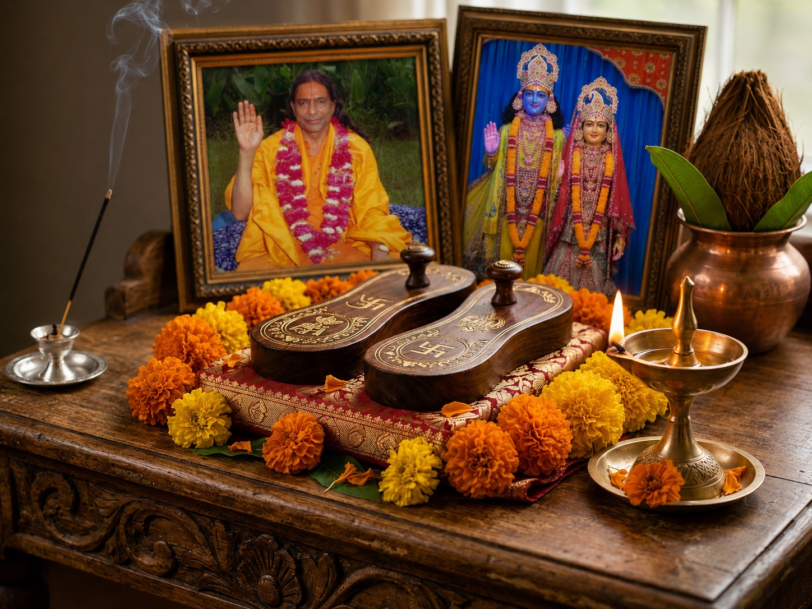
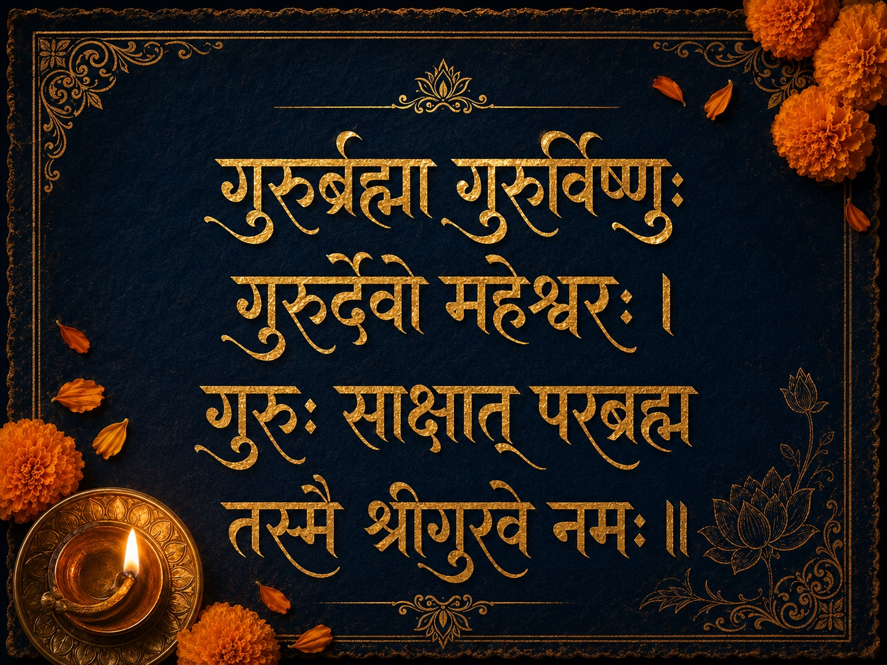

ଏକ ଏପରି ଜ୍ଞାନ ଅଛି ଯାହା କୌଣସି ପୁସ୍ତକ ଦେଇପାରିବ ନାହିଁ ଓ କୌଣସି ପ୍ରଯୁକ୍ତି ଦୋହରାଇ ପାରିବ ନାହିଁ। ସେ ଜ୍ଞାନ ଏକ ସଂପର୍କ ଦ୍ୱାରା ମିଳିଥାଏ — ଜଣେ ଜିଜ୍ଞାସୁ ଓ ସେ ମାର୍ଗଦର୍ଶକ ମଧ୍ୟରେ ଯିଏ ଆଗରୁ ସେ ପଥ ଚାଲିସାରିଛି।
ଗୁରୁ ପୂର୍ଣ୍ଣିମା ସେ ଦିନ ଯେତେବେଳେ ସନାତନ ଧର୍ମ ଏ ସତ୍ୟକୁ ସ୍ୱୀକାର କରିବା ପାଇଁ ଥମ୍କୁ। ଆଷାଢ଼ ପୂର୍ଣ୍ଣିମା ରାତିରେ ପାଳିତ ଏ ପର୍ବ ହେଉଛି କୃତଜ୍ଞତା, ବିନମ୍ରତା ଓ ଆଧ୍ୟାତ୍ମିକ ନବୀକରଣର ଦିନ। ଏବଂ ପ୍ରତି ବର୍ଷ ଯେତେବେଳେ ମୁଁ ଏ ପବିତ୍ର ପୂର୍ଣ୍ଣିମାରେ ଚିନ୍ତନ କରୁଛି, ଗୋଟିଏ ନାମ ସର୍ବପ୍ରଥମ ମୋ ହୃଦୟରେ ଜାଗ୍ରତ ହୁଏ।
ଏକ ବ୍ୟକ୍ତିଗତ ନିବେଦନ: ଶ୍ରୀ କୃପାଳୁଜୀ ମହାରାଜଙ୍କ ଚରଣ ପ୍ରତି
ଶ୍ରୀ କୃପାଳୁ ଜୀ ମହାରାଜ — ଜଗଦ୍ଗୁରୁ ଶ୍ରୀ କୃପାଳୁଜୀ ମହାରାଜ
ଗୁରୁ ପୂର୍ଣ୍ଣିମା ସଂପର୍କରେ ବ୍ୟାପକ ବା ପାରମ୍ପରିକ ଅର୍ଥ ଆଲୋଚନା ପୂର୍ବରୁ, ମୋତେ ପ୍ରଥମେ ନତମସ୍ତକ ହେବାକୁ ହେବ।
ଶ୍ରୀ କୃପାଳୁଜୀ ମହାରାଜ — ସନାତନ ଧର୍ମର ପଞ୍ଚମ ମୂଳ ଜଗଦ୍ଗୁରୁ — କେବଳ ଜଣେ ଶିକ୍ଷକ ନଥିଲେ। ସେ ଗୁରୁ ପରଂପରାର ବାସ୍ତବ ଅର୍ଥର ଜୀବନ୍ତ ପ୍ରମାଣ ଥିଲେ: ଶୁଦ୍ଧ, ନିଃସୀମ, ଅଖଣ୍ଡ ପ୍ରେମ ଯାହା ସାଧକ ଆଡ଼କୁ ଅବିରତ ପ୍ରବାହିତ ହୁଏ, ବଦଳରେ କିଛି ନ ମାଗି।
ତାଙ୍କ ବାର୍ତ୍ତା ସଦା ଏକ ଥିଲା: "ଭଗବାନ ଓ ଗୁରୁ ଏକ। ଗୁରୁ ହେଉଛନ୍ତି ସେ ଯିଏ ଏ ସତ୍ୟ ପ୍ରକାଶ କରନ୍ତି — ସିଦ୍ଧାନ୍ତରେ ନୁହେଁ, ତୁମ ନିଜ ହୃଦୟ ଭିତରେ।"
ବ୍ରଜଭାଷାରେ ତାଙ୍କ ରଚନାଗୁଡ଼ିକ — ପ୍ରେମ ରସ ମଦିରା, ଭକ୍ତି ଶତକ, ହଜାର ହଜାର ଭଜନ ଯାହା ବିରହ ବ୍ୟଥା ଓ ଦିବ୍ୟ ପ୍ରେମର ମାଧୁର୍ଯ ବର୍ଣ୍ଣନା କରୁଛି — ଏକ ଅଦ୍ଭୁତ ଗୁଣ ବହନ କରୁଛି ଯାହା ମୁଁ ଆଉ କୋଉଠି ପାଇ ନାହିଁ। ସେ ଭକ୍ତିର ବର୍ଣ୍ଣନା ନ କରି ଭକ୍ତି ଉତ୍ପନ୍ନ କରୁଛନ୍ତି।
ଏ ଗୁରୁ ପୂର୍ଣ୍ଣିମାରେ, ମୁଁ ତାଙ୍କ ଚରଣ-କମଳରେ ମୋର ଗଭୀରତମ ପ୍ରଣାମ ଅର୍ପଣ କରୁଛି। ମୋ କାର୍ଯ୍ୟରେ ଯେଉଁ ପ୍ରେମ ଶକ୍ତି ଓ ଜ୍ଞାନ ଅଂଶ ପ୍ରକାଶ ପାଉଛି — ତାହାର ଶ୍ରେୟ ତାଙ୍କ କୃପା ଓ ଆଶୀର୍ବାଦକୁ।

✦ ଗୁରୁ ପାଦୁକା — ଯେଉଁ ଚରଣରେ ଶିଷ୍ୟ ସମସ୍ତ ଅହଂ ସମର୍ପଣ କରେ ✦ଗୁରୁ ପୂର୍ଣ୍ଣିମାର ଅର୍ଥ କ'ଣ?
ଗୁରୁ ଶବ୍ଦ କେବଳ ଶିକ୍ଷକର ପ୍ରତିଶବ୍ଦ ନୁହେଁ। ଏହାର ସଂସ୍କୃତ ବ୍ୟୁତ୍ପତ୍ତି ଅତ୍ୟନ୍ତ ସଠିକ:
ଅନ୍ଧକାରନିରୋଧିତ୍ୱାତ୍ ଗୁରୁରିତ୍ୟଭିଧୀୟତେ॥
ଅତଏବ — ଗୁରୁ ହେଉଛନ୍ତି ସେ ଯିଏ ଅଜ୍ଞାନର ଅନ୍ଧକାର ଦୂର କରନ୍ତି।
ପୂର୍ଣ୍ଣିମା ଅର୍ଥାତ୍ ପୂର୍ଣ ଚନ୍ଦ୍ର ରାତ୍ରି — ଯେତେବେଳେ ଆକାଶ ସର୍ବାଧିକ ପ୍ରକାଶମୟ। ଗୁରୁ ଓ ପୂର୍ଣ ଚନ୍ଦ୍ର ଏକ ଗୁଣ ଭାଗ କରୁଛନ୍ତି: ଉଭୟ ପରମ ଆଲୋକ ପ୍ରତିଫଳିତ କରୁଛନ୍ତି ଯେ ଘୋର ଅନ୍ଧକାର ରାତ୍ରିରେ ବି ମାର୍ଗ ଦୃଶ୍ୟ ହୁଏ।
ଗୁରୁ ପୂର୍ଣ୍ଣିମା ହିନ୍ଦୁ ମାସ ଆଷାଢ଼ (ଜୁନ-ଜୁଲାଇ)ର ପୂର୍ଣ୍ଣିମା ଦିନ ପାଳିତ ହୁଏ। ଏ ସମୟ ବର୍ଷା ଋତୁ ଆରମ୍ଭ — ଭିତରମୁଖୀ ହେବାର, ବାହ୍ୟ ଜଗତରୁ ବିଶ୍ରାମ ନେବାର ସମୟ। ଏହା ଆଭ୍ୟନ୍ତରୀଣ ଗୁରୁ ଆଡ଼କୁ ମୁଣ୍ଡ ଫେରାଇବାର ଶ୍ରେଷ୍ଠ ଅବସର।
ଏହାକୁ ବ୍ୟାସ ପୂର୍ଣ୍ଣିମା କାହିଁକି କୁହାଯାଏ?
ଏ ଦିନ ବ୍ୟାସ ପୂର୍ଣ୍ଣିମା ନାମରେ ମଧ୍ୟ ଜଣାଶୁଣା — ମହର୍ଷି ବେଦ ବ୍ୟାସଙ୍କ ସମ୍ମାନାର୍ଥେ, ଯିଏ ବୈଦିକ ପରଂପରାର ଅନ୍ୟତମ ସର୍ବୋଚ୍ଚ ଋଷି।
ବ୍ୟାସ ଚତୁର୍ବେଦ ଏ ବର୍ତ୍ତମାନ ସ୍ୱରୂପରେ ସଂକଳନ କଲେ, ଅଷ୍ଟାଦଶ ମହାପୁରାଣ ରଚଲେ, ଓ ମହାଭାରତ ଲେଖିଲେ — ଯଥାମଧ୍ୟରେ ଭଗବଦ୍ଗୀତା ସ୍ଥାନ ପାଇଛି। ସେ ବୈଦିକ ଜ୍ଞାନ ସଂପ୍ରଦାୟର ଲିଖିତ ପରଂପରାର ଆଦ୍ୟ-ଗୁରୁ ଭାବରେ ବିବେଚିତ।
ଗୁରୁ ପୂର୍ଣ୍ଣିମା କିପରି ପାଳନ କରିବେ
ବିସ୍ତୃତ ଅନୁଷ୍ଠାନ ବାଧ୍ୟତାମୂଳକ ନୁହେଁ। ସବୁଠୁ ମୂଲ୍ୟବାନ ଅର୍ଘ୍ୟ ହେଉଛି ଏକ ଯଥାର୍ଥ ରୂପାନ୍ତରିତ ଜୀବନ।
ଗୁରୁ ପୂର୍ଣ୍ଣିମା ପାଇଁ ଗୁରୁ ମନ୍ତ୍ର
ଗୁରୁର୍ଦ୍ଦେବୋ ମହେଶ୍ୱରଃ।
ଗୁରୁଃ ସାକ୍ଷାତ୍ ପରବ୍ରହ୍ମ
ତସ୍ମୈ ଶ୍ରୀଗୁରବେ ନମଃ॥
ଗୁରୁ ବିଷ୍ଣୁ — ଯଥାର୍ଥ ଜ୍ଞାନର ପ୍ରରକ୍ଷକ।
ଗୁରୁ ମହେଶ୍ୱର — ଯାହା ବିଲୟ ହେବ ତାହା ଲୟ କରୁଥିବା।
ଗୁରୁ ପରବ୍ରହ୍ମ ଆଭ୍ୟନ୍ତରୀଣ ପ୍ରକାଶ ଅଟନ୍ତି।
ସେ ଶ୍ରୀ ଗୁରୁଙ୍କୁ ମୋ ସମ୍ପୂର୍ଣ ପ୍ରଣାମ।

✦ ଗୁରୁର୍ବ୍ରହ୍ମା ଗୁରୁର୍ବିଷ୍ଣୁଃ ଗୁରୁର୍ଦ୍ଦେବୋ ମହେଶ୍ୱରଃ — ତସ୍ମୈ ଶ୍ରୀଗୁରବେ ନମଃ ✦ବୈଦିକ ଜ୍ୟୋତିଷରେ ଗୁରୁ ପୂର୍ଣ୍ଣିମା — ବୃହସ୍ପତି ଗୁରୁ ଭାବରେ
ଜ୍ୟୋତିଷ ଶାସ୍ତ୍ରରେ ବୃହସ୍ପତିଙ୍କୁ ଗୁରୁ ବୋଲି କୁହାଯାଏ — ଦେବତାଙ୍କ ଦିବ୍ୟ ଆଚାର୍ଯ୍ୟ, ଯିଏ ପ୍ରଜ୍ଞା, ଧର୍ମ ଓ ଆଧ୍ୟାତ୍ମିକ ବୋଧ ପ୍ରଦାନ କରୁଛନ୍ତି।
ଆପଣଙ୍କ ଜନ୍ମ କୁଣ୍ଡଳୀରେ ବୃହସ୍ପତି ଶିକ୍ଷକ, ଗୁରୁ, ଉଚ୍ଚ ଜ୍ଞାନ, ଧର୍ମ, ସନ୍ତାନ ଓ ଆଧ୍ୟାତ୍ମିକ ବିସ୍ତାର ସହ ଆପଣଙ୍କ ସଂପର୍କ ଦର୍ଶାଉଛନ୍ତି।
ଗୁରୁ ପୂର୍ଣ୍ଣିମା ବାସ୍ତବରେ କ'ଣ ପଚାରୁଛି
ମୁଁ କ'ଣ ଜୀବନର ଭଲ ଛାତ୍ର ହୋଇ ଚାଲୁଛି?
ମୁଁ କ'ଣ ସୁଧାର ଗ୍ରହଣ କରିବାକୁ ବିନମ୍ର ଭାବରେ ପ୍ରସ୍ତୁତ?
ମୋ କ୍ରିୟା ମୁଁ ଯାହା ଶିଖିଛି ତାହାର ସମ୍ମାନ କ'ଣ କରୁଛି?
କୃପାଳୁଜୀ ମହାରାଜ ପ୍ରାୟ କହୁଥିଲେ ଯେ ଗୁରୁ କୃପାର ସର୍ବଶ୍ରେଷ୍ଠ ସଂକେତ ହେଉଛି: ତୁମେ ଅଧିକ ପ୍ରେମମୟ, ଅଧିକ ନମ୍ର, ଅଧିକ ଯଥାର୍ଥ ଦୟାଳୁ ହୋଇ ଚାଲୁଛ — ଧୀରେ ଧୀରେ, ନାଟ୍ୟ ବିନା, ସମୟ ସହ। ଯଦି ଏ ଘଟୁଛି — ଯତ ଧୀରେ ହୋଉ ନ କାହିଁ — ଗୁରୁ କାର୍ଯ୍ୟ ଚାଲୁଛି।
ହେ ଦିବ୍ୟ ଗୁରୁ,
ମୋ ମନରୁ ଅଜ୍ଞାନ,
ହୃଦୟରୁ ଅହଂ
ଓ ମୋ ମାର୍ଗରୁ ଭ୍ରମ ଦୂର କରନ୍ତୁ।
ସତ୍ୟ ଚିହ୍ନ ପାଇଁ ଜ୍ଞାନ,
ତାହା ଅଭ୍ୟାସ କରିବା ସାହସ
ଓ ଛାତ୍ର ରହିବା ବିନମ୍ରତା ଦିଅନ୍ତୁ।
ତସ୍ମୈ ଶ୍ରୀଗୁରବେ ନମଃ।
ଅକ୍ସର ପଚରାଯାଉଥିବା ପ୍ରଶ୍ନ
ଆପଣଙ୍କ ଜନ୍ମ କୁଣ୍ଡଳୀରେ ବୃହସ୍ପତି — ଗୁରୁ ଗ୍ରହ — ଜାଣନ୍ତୁ
ବୈଦିକ ଜ୍ୟୋତିଷରେ ବୃହସ୍ପତି ଜ୍ଞାନ, ଶିକ୍ଷକ, ଧର୍ମ, ସନ୍ତାନ ଓ ଆଧ୍ୟାତ୍ମିକ ବିସ୍ତାର ଦ୍ୟୋତକ। ବ୍ୟକ୍ତିଗତ କୁଣ୍ଡଳୀ ବିଶ୍ଲେଷଣ ଦ୍ୱାରା ଜାଣନ୍ତୁ ଆପଣଙ୍କ ବିଶେଷ କୁଣ୍ଡଳୀରେ ଏ ଗ୍ରହ କିପରି କାର୍ଯ୍ୟ କରୁଛନ୍ତି।